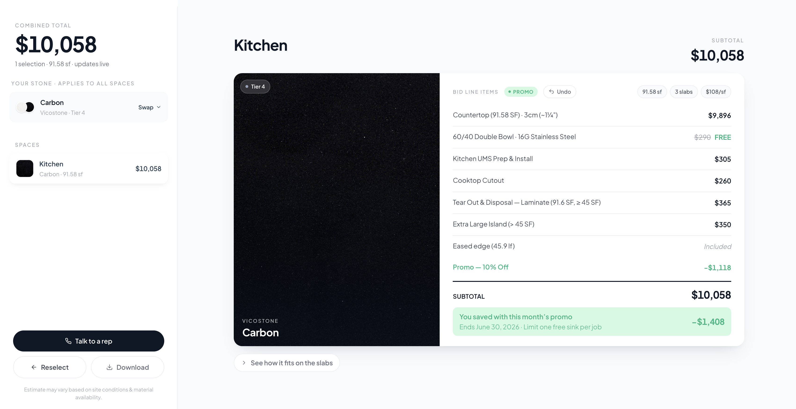

CRM-Bench
Can AI agents actually run a CRM? I tested frontier models on real tasks in a live Salesforce Developer org, with a simulated user pushing back across multi-turn chats.
Engineer and builder. I'm working toward a world where nobody spends their life on work they don't care about.
I'm a software engineer, independent AI researcher, and the writer behind Outside Engineer, based in San Francisco. I've spent four years building websites for businesses, published CRM-Bench, a study of how AI agents handle real Salesforce work, and I'm finishing my B.S. in Software Engineering at the University of Minnesota with a 4.0 GPA.
I didn't come up through CS. I came up through construction.
At Paramount Granite, I ran 50+ contractor accounts and up to 30 active jobs at once: quotes, slab and sink orders, installs, every status tracked in a CRM. I also ran marketing, rebuilt the company's website and two sister-company sites, and worked the home shows. I was good at the job. But most of my day went to the work around the work. The craft was in the stone. The hours went to the paperwork.
Nobody was going to fix that for me, so I learned how to fix it myself. I taught myself React and TypeScript and built a countertop quoting wizard that turns a hand sketch into a priced quote. Custom shapes, polygon math, AI sketch extraction.

That was the moment I knew what I wanted to do with my life. Not just use tools, but build them. I build tools that take the busywork off people's plates, so they can spend their time on the work they actually care about. AI is the biggest lever we've ever had for that, and I treat it as exactly that: a lever. The point is the person using it.
When I say "the work people care about," I don't mean squeezing more output out of every hour. This isn't about productivity, or about what the world would call a good use of time. I mean the things that give people energy, passion, and warmth: the craft they love, the people they want to show up for, the ideas they can't stop thinking about. Some of that looks productive. A lot of it doesn't. All of it deserves more of someone's life than the paperwork does.
Every project since has pulled on the same thread. CRM-Bench measures whether AI agents can actually do real business work yet. TDFeed turns hours of keeping up with research into minutes. My job-search pipeline does the grind of finding and filling applications so I can spend my time on the ones that matter.
Today I'm leading the full website redesign at Wallin Education Partners, which helps students from lower-income backgrounds get to and through college, so they can build careers they choose. Same mission, different scale.
I just moved to San Francisco to build this full time.
I believe people should own their time. Mindset beats odds. Know thyself.
My goal is simple to say and hard to do: help millions of people spend more of their days on what gives them energy, passion, and warmth.
I build tools for problems I actually have, then ship them. My favorites: CRM-Bench, an eval of AI agents doing real Salesforce work, and TDFeed, the research reader I use every day.
I write Outside Engineer: real-world software concepts, decoded. Latest: how five AI models handle real Salesforce work.
I grew up in Minnesota. My first real pitch was for my high school robotics team, M-TECH: I cold-called local companies and raised $4,000 in sponsorships in two months. We used it to run robotics workshops for elementary kids.
Nobody handed me a path into tech. I cold-called, taught myself, and built my way in. I believe that's open to anyone, and I want to build the tools that make it easier.
Luck is mostly showing up again.
Email brianna.pischke@gmail.com , or find me on X.
Things I've built, newest thinking first. Most started as a problem I had myself.
Can AI agents actually run a CRM? I tested frontier models on real tasks in a live Salesforce Developer org, with a simulated user pushing back across multi-turn chats.
A research feed reader. Subscribe to sources, read in the app, save to collections. Built to track new research I write about.
Room to shapes to stone to quote. SVG layout diagrams, shoelace-formula area math for custom shapes, and AI sketch extraction.
My personal job-search pipeline. Pulls listings from several sources, drops reposts and stale posts, scores fit, and pre-fills applications without ever submitting. link or "private"
Scans Hacker News for problems people keep complaining about and sorts them into SaaS ideas. link
A demo accounting-firm site built to show real WordPress work end to end.
Outside Engineer: real-world software concepts, decoded.
Accuracy, cost and self-verification across five models working in a live Salesforce org.